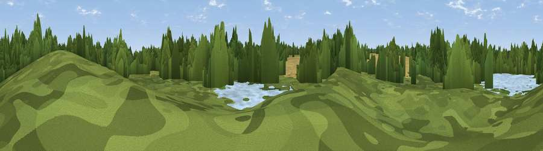

Viewpoint near Bamfurlong
#45969 in England · top 97% of its area beats it · near Bamfurlong · access?Where it is
The exact computed spot (SD 58202 02539). Click the marker for map links.
Public access: no public right of way or access land is recorded at this exact spot — it may be on private land. Computed from Natural England's CRoW access layer and OpenStreetMap rights of way — not the legal definitive map. Always verify locally.
The view, rendered

A 360° render of this exact spot computed from the terrain model, tree cover and land cover — summer colours, afternoon light, calibrated against photographs of famous viewpoints. Real trees, hedges and buildings will differ in detail.
The panorama
Grey silhouette: terrain skyline in each direction (720 bearings, Earth curvature and refraction included). Dashed green: skyline with trees (+15 m) and buildings (+8 m) as obstacles. Blue strip: how far the ground is visible on each bearing.
Where the view opens
Wedge length = distance to the farthest visible ground on that bearing (vegetation-aware). Rings at 10, 25 and 50 km.
What fills the view
48% woodland · 43% cropland · 6% grassland · 2% built-up
Angular shares of the visible panorama (visual magnitude), not map area. Landscape diversity 0.44 (0–1 Shannon).
Key numbers
More beautiful places nearby
The staircase of upgrades: each row has a higher view potential than everything closer. Driving times are estimates from straight-line distance, calibrated against real road routing — check an actual route before setting out.
| Place | Direction | Drive | Score |
|---|---|---|---|
| Viewpoint near Bamfurlong | S · 1 km | ~3 min | 36.2 |
| Weathercock Hill | SW · 5 km | ~10 min | 55.6 |
| Viewpoint near Billinge | WSW · 5 km | ~12 min | 68.0 |
| Billinge Hill | WSW · 6 km | ~12 min | 71.6 |
| Viewpoint near Far Moor | W · 6 km | ~13 min | 72.8 |
| Viewpoint near Dalton | WNW · 10 km | ~19 min | 74.2 |
| White Brow | NE · 13 km | ~23 min | 82.9 |
| Warton Crag | N · 71 km | ~94 min | 83.2 |
53.51785, -2.63184 · source: osm viewpoint · position refined by local search. Computed location — check access rights before visiting.